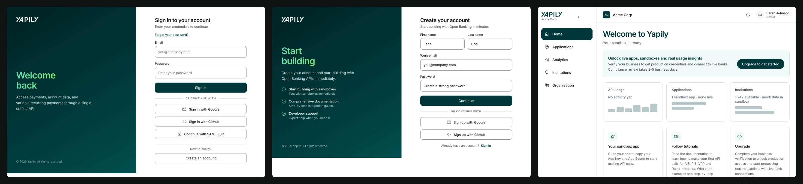

Turning a sales-led onboarding into a self-serve one
The Console is where Yapily customers sign up, manage applications and configure their integration.
As the company grew, the product didn’t keep up. Anything the Console couldn’t do became manual work for support, engineering or customer success. Becoming a customer could take six months to a year.
The Console had originally been built for a handful of enterprise customers.
Years later, around 80% of customers were non-enterprise, but everyone still went through the same sales-led onboarding.
The cost showed up in people’s time.
Support enabled features manually. Engineers changed configuration. Customer success exported reports. Almost every stage depended on somebody being available.
Making the problem visible
The Console wasn’t on the roadmap, so the first job was making the case for investing in it.
I ran:
01customer interviews
02a cross-functional workshop with product, engineering, support and customer success
03a two-day hackathon where we tried to onboard using only what a real customer could access
04an end-to-end map from first website visit to renewal
The workshop changed the conversation. What had looked like a design complaint became a visible operational cost across several teams.
The Console was prioritised.
Getting to production, before
Six months to a year, depending on availability, customer type and deal size.
STAGE 1
Evaluating
Path
Organic and paid traffic
Website
Docs · Dashboard · Support · Chat, each loops back or exits
Contact form → inbound lead
Two routes end in no conversion
Channels
Website · Documentation · Dashboard · Support inbox · Live chat
Teams
None assigned. Nobody owns this stage.
What matters here
Coverage for their specific use case · pricing · features · how to test the API · the basics of licences, compliance and limitations · how to become a customer · time to go live · what open banking can and can’t do · how we compare · building trust
Limited access to mock banks and sandboxes, but no way to know where the limits are, because the experience doesn’t tell them.
STAGE 2
Becoming a customer
Path
Sales funnel
KYC
Contract signed
Customer success onboarding
Channels
Video calls · email · PDF forms · scheduling links · demos
Reliability of the service and the banks · speed · ease of use · support for the nuances of their use case · learning what’s new and coming · getting help with bugs · influencing the roadmap · troubleshooting
One path serving two customer types. Agents want the experience to be theirs, not ours. Direct customers need help with registration and portal complexity. Neither is well served by the same flow.
Manual, depends on someone being availableAutomated or self-servedDead end, no conversion
The strategy
Instead of forcing every customer through one process, we split the path in two.
Enterprise customers keep an assisted experience.
Everyone else gets self-service: create an account, access a sandbox, complete verification, configure products and move towards production without waiting for meetings.
The target is to reduce onboarding from six months–one year to weeks–a few months.
Getting to production, before
Six months to a year, depending on availability, customer type and deal size.
STAGE 1
Evaluating
Path
Organic and paid traffic
Website
Docs · Dashboard · Support · Chat, each loops back or exits
Contact form → inbound lead
Two routes end in no conversion
Channels
Website · Documentation · Dashboard · Support inbox · Live chat
Teams
None assigned. Nobody owns this stage.
What matters here
Coverage for their specific use case · pricing · features · how to test the API · the basics of licences, compliance and limitations · how to become a customer · time to go live · what open banking can and can’t do · how we compare · building trust
Limited access to mock banks and sandboxes, but no way to know where the limits are, because the experience doesn’t tell them.
STAGE 2
Becoming a customer
Path
Sales funnel
KYC
Contract signed
Customer success onboarding
Channels
Video calls · email · PDF forms · scheduling links · demos
Reliability of the service and the banks · speed · ease of use · support for the nuances of their use case · learning what’s new and coming · getting help with bugs · influencing the roadmap · troubleshooting
One path serving two customer types. Agents want the experience to be theirs, not ours. Direct customers need help with registration and portal complexity. Neither is well served by the same flow.
Manual, depends on someone being availableAutomated or self-servedDead end, no conversion
What changed
Customers can now:
01create an organisation and sandbox immediately
02generate applications and credentials
03invite team members and assign roles
04complete KYB online
05manage bank coverage
06configure Hosted Pages
07see analytics, billing and integration status directly
The same Console serves evaluation, onboarding and production instead of handing customers between disconnected tools and teams.

Four authentication routes rather than one, everything not needed to create an account moved out of it, and a first run that offers three ways forward instead of an empty dashboard.
Four authentication routes rather than one, everything not needed to create an account moved out of it, and a first run that offers three ways forward instead of an empty dashboard.
Four authentication routes rather than one, everything not needed to create an account moved out of it, and a first run that offers three ways forward instead of an empty dashboard.
Four authentication routes rather than one, everything not needed to create an account moved out of it, and a first run that offers three ways forward instead of an empty dashboard.
What shipped
The Hosted Pages configurator is already live.
Previously, changing branding or configuration required a support ticket and an engineer. Customers can now manage it themselves, removing that manual work entirely.
The wider Console is currently in beta, so it is too early to report adoption or final onboarding metrics.
What I learned
The biggest issue wasn’t the UI. It was that the product had been designed around one customer type and one way of working.
The recurring question I now ask much earlier is:
Can there be more than one of this?
One customer type. One licence. One organisation. One behaviour.
Asking that question early is cheap. Retrofitting the answer years later isn’t.